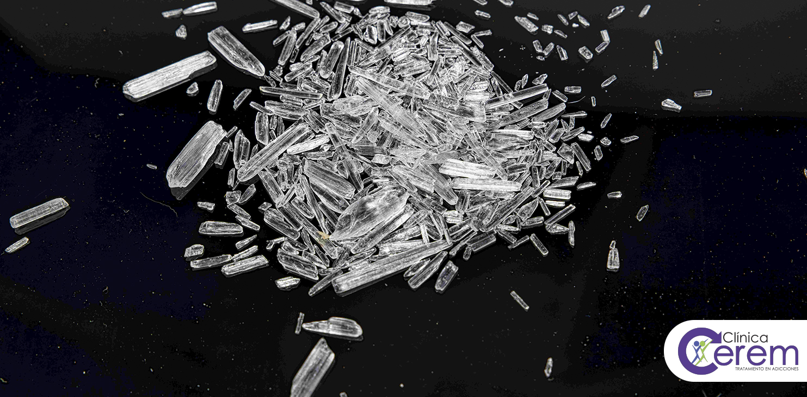

Definición
La metanfetamina es un potente y altamente adictivo estimulante del sistema nervioso central (SNC) que pertenece al grupo de los Estimulantes de Tipo Anfetamínico (ETA). Afecta profundamente el cerebro y el cuerpo, con graves consecuencias para la salud física y mental.
Nombre Científico/Sistemático: (RS)-N-metil-1-fenilpropan-2-amina (desoxiefedrina).
Estructura Química: Es un agente agonista adrenérgico sintético, estructuralmente similar a la anfetamina, al alcaloide efedrina y a la hormona adrenalina.
Presentación: Se puede encontrar como un polvo cristalino (a veces blanco o amarillo), píldoras, o en su forma más común e ilícita, como fragmentos de vidrio o "rocas" blanco-azuladas brillantes, conocida como metanfetamina de cristal o "crystal meth", "hielo" o "vidrio".
Vías de Administración: Se puede ingerir, inhalar (aspirar), fumar o inyectar. La intensidad del "subidón" o euforia es mayor y más inmediata al fumarse o inyectarse.
Mecanismo de Acción Principal:
Cruza la barrera hematoencefálica muy fácilmente debido a su liposolubilidad, alcanzando niveles altos en el cerebro.
Actúa como un liberador masivo de neurotransmisores monoaminas (especialmente dopamina, pero también norepinefrina y serotonina) en las áreas del cerebro relacionadas con el placer, la motivación y el movimiento.
También es un inhibidor de la recaptación de estos neurotransmisores y aumenta la actividad de la tirosina hidroxilasa (enzima clave en la síntesis de dopamina).
Historia y Usos (Legales e Ilegales)
Síntesis: Fue sintetizada por primera vez en Japón en 1919, a partir de la molécula de anfetamina.
Uso Comercial Inicial: Se comenzó a comercializar en 1938 bajo el nombre de Methedrina, utilizándose originalmente en descongestivos nasales e inhaladores bronquiales.
Uso en la Guerra: Durante la Segunda Guerra Mundial, se proveyó a soldados y pilotos aviadores (especialmente en Alemania, Japón y EE. UU.) para combatir la fatiga y aumentar el estado de alerta durante el combate.
Usos Médicos Actuales (Limitados):
Existe un único producto legal que contiene metanfetamina, el Desoxyn®, aprobado por la FDA, que tiene un uso muy restringido en el tratamiento de la narcolepsia y el Trastorno por Déficit de Atención e Hiperactividad (TDAH), así como para la obesidad (fines anorexígenos). Es una sustancia de la Lista II de la Ley de Sustancias Controladas, lo que indica un alto potencial de abuso.
Uso Ilícito: Su uso recreativo se popularizó por su potente efecto euforizante y su relativamente bajo costo de producción (a menudo en laboratorios ilícitos con sustancias químicas corrosivas y dañinas).

Regresar